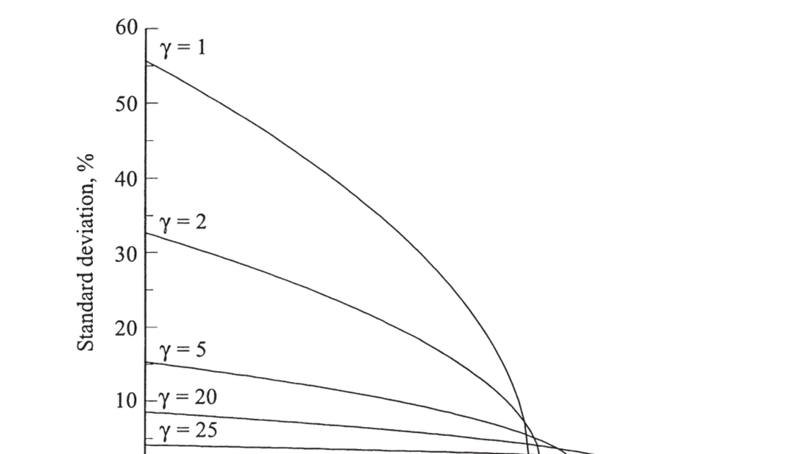

21. Equity Premium Puzzle and Consumption-Based Models
21. Equity Premium Puzzle and Consumption-Based Models
本章导读 消费模型从某种意义上是"我们唯一的模型"——投资者储蓄与组合选择的一阶条件必是出发点。自 Mehra-Prescott (1985) 与 Hansen-Jagannathan (1991) 起,金融经济学家能反向工作:刻画贴现因子为解释收益数据所必须具备的性质——必须极其波动、但条件波动不大(无风险利率/条件均值须相当平稳)。本章(Cochrane 第 21 章,Part IV 收官,全书正文末章)§21.1 股权溢价之谜(HJ 界要求 \(\sigma(m)\ge50\%\),幂效用下需 \(\gamma\approx50\),加相关性需 \(\gamma\approx250\);无风险利率之谜:高 \(\gamma\)→高 \(r^f\) 或负贴现率;利率稳定→条件均值不能变;长期之谜更糟);§21.2 新模型(都引入"衰退"状态变量、非可分效用):Campbell-Cochrane 习惯形成(时变风险厌恶)、Constantinides-Duffie 异质个体未保险特异风险,以及 Epstein-Zin 递归效用、稀有灾难等。
21. Equity Premium Puzzle and Consumption-Based Models
Overview The consumption model is in some sense "the only model we have" — investors' first-order conditions for saving and portfolio choice must be the starting point. Since Mehra-Prescott (1985) and Hansen-Jagannathan (1991), financial economists can work backward: characterize the properties a discount factor must have to explain return data — it must be extremely volatile, but not too conditionally volatile (the risk-free rate / conditional mean must be fairly steady). This chapter (Cochrane Ch 21, the capstone of Part IV and the last main-text chapter): §21.1 the equity premium puzzle (the HJ bound requires \(\sigma(m)\ge50\%\), needing \(\gamma\approx50\) under power utility, \(\gamma\approx250\) with the correlation puzzle; the risk-free-rate puzzle: high \(\gamma\) → high \(r^f\) or a negative discount rate; stable rates → the conditional mean cannot move; the long-run puzzle is worse); §21.2 new models (all introduce a "recession" state variable and non-separable utility): Campbell-Cochrane habit persistence (time-varying risk aversion), Constantinides-Duffie heterogeneous agents with uninsured idiosyncratic risk, plus Epstein-Zin recursive utility, rare disasters, etc.
21.1 股权溢价之谜 / The Equity Premium Puzzle
战后美股夏普比率约 0.5(年超额收益 8%、标准差 16%)。基本 Hansen-Jagannathan 界
21.1 The Equity Premium Puzzle
The postwar US market Sharpe ratio is about 0.5 (8% annual excess return, 16% standard deviation). The basic Hansen-Jagannathan bound
$$\frac{|E(R^e)|}{\sigma(R^e)}\le\frac{\sigma(m)}{E(m)}\approx\gamma\,\sigma(\Delta c)$$
三重之谜 / A triple puzzle ① 股权溢价之谜:\(E(m)\approx0.99\)(T-bill 约 1%),故 \(\sigma(m)>0.5\)——贴现因子波动须达其水平的 50%!但人均消费增长标准差仅约 1%,对数效用给 \(\sigma(m)=1\%\),差 50 倍;要匹配溢价需 \(\gamma>50\),风险厌恶大得离谱。② 相关性之谜:HJ 界取消费与股票完美相关的极端;实际相关仅约 0.2,故须 \(\sigma(m)/E(m)\ge(1/0.2)\times0.5=2.5\),需 \(\gamma\approx250\)!(注意:给 \(m\) 加与资产无关的噪声 \(\varepsilon\) 会增 \(\sigma(m)\) 却不改定价能力——比较 \(\sigma(\operatorname{proj}(m|X))\) 而非 \(\sigma(m)\) 才能避开此陷阱。)③ 无风险利率之谜:\(r^f=\delta+\gamma E(\Delta c)-\tfrac12\gamma(\gamma+1)\sigma^2(\Delta c)\);\(\gamma=50\) 时预测 \(r^f=38\%\),要得 1% 须 \(\delta=-37\%\)(人们偏好更早的效用,不合理)。且利率稳定→几乎全部 50% 贴现因子方差须来自非预期成分而非条件均值。幂效用形式无关紧要;关键是引入区分跨期替代与风险厌恶的非可分性。① The equity premium puzzle: \(E(m)\approx0.99\) (T-bill ≈1%), so \(\sigma(m)>0.5\) — the discount factor's volatility must be 50% of its level! But per-capita consumption growth has standard deviation only ~1%, so log utility gives \(\sigma(m)=1\%\), off by a factor of 50; matching the premium needs \(\gamma>50\), an absurd risk aversion. ② The correlation puzzle: the HJ bound takes the extreme of consumption perfectly correlated with stocks; the actual correlation is only ~0.2, so \(\sigma(m)/E(m)\ge(1/0.2)\times0.5=2.5\), needing \(\gamma\approx250\)! (Note: adding noise \(\varepsilon\) uncorrelated with assets to \(m\) raises \(\sigma(m)\) without changing pricing — comparing \(\sigma(\operatorname{proj}(m|X))\) rather than \(\sigma(m)\) avoids this trap.) ③ The risk-free-rate puzzle: \(r^f=\delta+\gamma E(\Delta c)-\tfrac12\gamma(\gamma+1)\sigma^2(\Delta c)\); \(\gamma=50\) predicts \(r^f=38\%\), and getting 1% requires \(\delta=-37\%\) (unreasonable — people prefer earlier utility). And stable rates → nearly all of the 50% discount-factor variance must come from the unexpected component, not the conditional mean. The power functional form is not the issue; the key is to introduce a non-separability that distinguishes intertemporal substitution from risk aversion.
\(\gamma=50\sim250\) 在时间可分效用里意味着消费者几乎不愿跨期替代消费,故须有巨大利率变动才能逼出我们所见的小消费增长变动——这太极端(想想要多高利率才肯让一家人推迟今年的度假:\(\gamma=50\) 需 14,800%,\(\gamma=250\) 需 \(3\times10^{11}\)!)。
若干变体与数据问题。 仅压低利率无济于事(小盘/价值组合的夏普比率同样高)。个体风险不是显然的解:个体消费增长虽更波动,但不可能年变 50–250%;且越是特异、与股票相关性越低(\(c^i=c^a+\varepsilon^i\Rightarrow\operatorname{cov}(c^i,r)=\operatorname{cov}(c^a,r)\)),由相关性之谜逻辑,定价含义完全不受影响。运气与更低的目标:股票标准差太高,50 年样本均值的标准误约 \(16/\sqrt{50}\approx2.3\),故 8% 的两倍标准误置信区间约为 3%–13%!Brown-Goetzmann-Ross 的选择偏差(我们恰在美国写这本书、用美国数据,正因其表现好)与"比索问题"(过去 50 年没发生的银行恐慌、萧条、战争……)都暗示真实溢价或许只有 3–4%。长期之谜更糟:消费长期须与财富同步,故世界远非 i.i.d.;若股票均值回复,贴现因子波动须比 \(\sqrt{\text{horizon}}\) 增长更快,而消费增长波动只随 \(\sqrt{\text{horizon}}\) 增长——长期限上溢价之谜更严重。
21.2 新模型 / New Models
\(\gamma=50\sim250\) in a time-separable utility means consumers are essentially unwilling to substitute consumption over time, so huge interest-rate variation must force the small consumption-growth variation we see — too extreme (think how high a rate it takes to defer a family vacation: \(\gamma=50\) needs 14,800%, \(\gamma=250\) needs \(3\times10^{11}\)!).
Variations and data issues. Just lowering the interest rate won't help (small/value portfolios have high Sharpe ratios too). Individual risk is not an obvious solution: individual consumption growth is more volatile but cannot vary by 50–250% per year; and the more idiosyncratic it is, the less correlated with stocks (\(c^i=c^a+\varepsilon^i\Rightarrow\operatorname{cov}(c^i,r)=\operatorname{cov}(c^a,r)\)), so by correlation-puzzle logic the pricing implications are unaffected. Luck and a lower target: stock standard deviation is so high that the standard error of a 50-year mean is ~\(16/\sqrt{50}\approx2.3\), so a two-standard-error interval for the 8% premium runs ~3%–13%! Brown-Goetzmann-Ross's selection bias (we write this book in the US, with US data, precisely because returns were good) and "Peso problems" (the bank panics, depressions, wars that did not happen in 50 years) suggest the true premium may be only 3–4%. The long-run puzzle is worse: consumption must move with wealth in the long run, so the world is far from i.i.d.; if stocks mean-revert, discount-factor volatility must grow faster than \(\sqrt{\text{horizon}}\) while consumption-growth volatility grows only with \(\sqrt{\text{horizon}}\) — making the puzzle worse at long horizons.
21.2 New Models
解谜的共同思路:衰退状态变量 + 非可分效用 / The common route: a recession state variable + non-separable utility 我们要一个模型:解释高夏普比率、股票收益的高水平与高波动,同时利率低而稳定、消费增长近 i.i.d. 且波动小,并解释超额收益的可预测性(高价预示低收益)。共同思路是引入额外状态变量:投资者怕的不是持股的财富/消费效应本身,而是股票在特定坏状态(衰退)做得差。ICAPM 形式 \(E(r)-r^f=-\tfrac{WV_{WW}}{V_W}\operatorname{cov}(W,r)-\tfrac{zV_{Wz}}{V_W}\operatorname{cov}(z,r)\);效用形式 \(u(C,z)\) 须非可分(\(u_{Cz}\ne0\))。教训:第二项须解释几乎全部市场溢价。可预测性本是状态变量的自然来源,但符号不对(股票是其自身机会集的好对冲、会降低溢价),故所需衰退状态变量须强到不仅解释溢价、还要压过可预测性的反向效应——衰退是高预期收益的"好时光"(对 Merton 投资者而言),其他描述衰退的变量(高风险厌恶、低劳动收入、流动性)须压过这"好时光"、表明时局确实糟。We want a model that explains a high Sharpe ratio, the high level and volatility of stock returns, with low and stable interest rates, roughly i.i.d. low-volatility consumption growth, and the predictability of excess returns (high prices → low returns). The common route is an additional state variable: investors fear not the wealth/consumption effect of holding stocks per se, but that stocks do badly in particular bad states (recessions). In ICAPM form \(E(r)-r^f=-\tfrac{WV_{WW}}{V_W}\operatorname{cov}(W,r)-\tfrac{zV_{Wz}}{V_W}\operatorname{cov}(z,r)\); in utility form \(u(C,z)\) must be non-separable (\(u_{Cz}\ne0\)). The lesson: the second term must account for essentially all the market premium. Predictability is a natural source of state variables, but the sign is wrong (stocks hedge their own opportunity set, lowering the premium), so the recession state variable must be strong enough to explain the premium AND overcome predictability's reverse effect — recessions are "good times" of high expected returns (to a Merton investor), so the other recession variables (high risk aversion, low labor income, liquidity) must overcome those "good times" and signal that times really are bad.
习惯形成(Campbell-Cochrane 1999)。 自然想法:人在繁荣中(消费/财富上升)风险厌恶下降、在衰退中上升。不能把风险厌恶系于消费水平(它随时间增长而溢价未降),故系于消费相对于近期/趋势的水平。设外部("攀比 Joneses")习惯 \(X\),效用 \(u(C-X)\),令剩余消费比 \(S=(C-X)/C\) 服从 AR(1)。局部曲率 \(\eta_t=\gamma/S_t\) 随 \(S\) 时变。模型用 \(\gamma=2\) 即匹配战后夏普比率 0.5、得恒定 0.94% 利率与合理 \(\delta<1\),并匹配收益的长期可预测性(表 21.1、21.2)。机理:\(\sigma(m)\) 必须大,但其条件均值(利率)须稳——习惯让 \(\partial S/\partial C\approx50\),放大消费风险至所需波动;幂系数 \(\gamma=2\) 控制利率,曲率 \(\gamma/S\) 控制溢价,故高"风险厌恶"配低"跨期替代厌恶",与利率数据一致。\(S\) 是衰退指示器(连跌几季后低、繁荣中高),故"投资者怕股票,因其在偶发严重衰退、近期勒紧裤带之时做得差"。
Habit persistence (Campbell-Cochrane 1999). Natural idea: people become less risk averse in a boom (consumption/wealth up) and more in a recession. One cannot tie risk aversion to the level of consumption (it grows over time while the premium hasn't fallen), so tie it to consumption relative to its recent past/trend. With an external ("keeping up with the Joneses") habit \(X\), utility \(u(C-X)\), let the surplus consumption ratio \(S=(C-X)/C\) follow an AR(1). The local curvature \(\eta_t=\gamma/S_t\) varies with \(S\). With \(\gamma=2\) the model matches the postwar Sharpe ratio of 0.5, a constant 0.94% rate, and a reasonable \(\delta<1\), and reproduces long-horizon return predictability (Tables 21.1, 21.2). Mechanism: \(\sigma(m)\) must be large but its conditional mean (the rate) steady — the habit makes \(\partial S/\partial C\approx50\), amplifying consumption risk to the required volatility; the power coefficient \(\gamma=2\) controls the rate while the curvature \(\gamma/S\) controls the premium, so high "risk aversion" with low "aversion to intertemporal substitution," consistent with the rate data. \(S\) is a recession indicator (low after several quarters of decline, high in booms), so "investors fear stocks because they do badly in occasional serious recessions, times of recent belt-tightening."
长期之谜的微妙之处 / The subtle resolution of the long-run puzzle \(S\) 虽平稳,\(S^{-\gamma}\) 却不平稳(\(S\) 在零附近有肥尾,使 \(S^{-\gamma}_{t+k}\) 的条件方差无界增长)——这看似微小的区别其实关键:任何想用一个平稳额外状态变量同时解释长短期溢价的模型,都须找到类似变换使贴现因子波动在长期限上保持高位。该模型确有高风险厌恶(效用与值函数曲率都高);至今没有模型能在低风险厌恶、低且稳的利率、与正确可预测性模式下同时生成股权溢价。可把 \(\ln M_{t+1}=a+b(s_t)+d(s_t)(c_{t+1}-c_t)\) 看作第 8 章的"缩放因子模型"——仍是消费模型,但贴现因子对消费的敏感度随时间变。\(S\) is stationary but \(S^{-\gamma}\) is not (\(S\) has a fat tail near zero, so the conditional variance of \(S^{-\gamma}_{t+k}\) grows without bound) — this seemingly minor distinction is central: any model explaining the premium at long and short horizons via a stationary extra state variable must find a similar transformation keeping discount-factor volatility high at long horizons. The model does have high risk aversion (both utility and value-function curvature are high); no current model generates the premium with low risk aversion, low/stable rates, and the right predictability pattern. One can read \(\ln M_{t+1}=a+b(s_t)+d(s_t)(c_{t+1}-c_t)\) as the "scaled factor model" of Ch 8 — still a consumption model, but with a time-varying sensitivity of the discount factor to consumption.
异质个体与特异风险(Constantinides-Duffie 1996)。 另一条路:保留标准偏好,但加未保险的特异风险。这个巧妙模型可裁剪特异风险以生成任意的总量消费与资产价格模式(溢价、可预测性、稳定利率、平滑不可预测的总消费),且无需交易成本、借贷约束等摩擦,个体风险厌恶可为任意非零值。关键设定:让消费增长的横截面方差在市场收益低时变高 \(y_{t+1}=\sigma(\ln(C_{i,t+1}/C_{it})|R_{t+1})\);给定此结构,个体恰好愿意消费其禀赋而无须再交易,其一阶条件 \(1=E_t[e^{-\delta}(C_{i,t+1}/C_{it})^{-\gamma}R_{t+1}]\) 精确成立。
Heterogeneous agents and idiosyncratic risk (Constantinides-Duffie 1996). Another route: keep standard preferences but add uninsured idiosyncratic risk. This clever model can tailor idiosyncratic risk to generate any pattern of aggregate consumption and asset prices (the premium, predictability, stable rates, smooth unpredictable aggregate consumption), with no transaction costs, borrowing constraints, or other frictions, and any nonzero individual risk aversion. The key: make the cross-sectional variance of consumption growth high when the market return is low, \(y_{t+1}=\sigma(\ln(C_{i,t+1}/C_{it})|R_{t+1})\); given this structure, each individual is exactly happy to consume his endowment without further trading, and his first-order condition \(1=E_t[e^{-\delta}(C_{i,t+1}/C_{it})^{-\gamma}R_{t+1}]\) holds exactly.
为何特异风险须与市场负相关、且为何仍需高风险厌恶 / Why idiosyncratic risk must be countercyclical — and still needs high risk aversion 为何特异消费冲击须与市场不相关?与市场相关的个体收入冲击会被交易掉(A 做空、B 做多),故对定价无影响。唯一出路是利用边际效用的非线性:给人与收益不相关、无法交易掉的收入冲击,再让非线性边际效用把这些冲击变成与资产收益相关的边际效用冲击。故 Constantinides-Duffie 设定特异风险方差在市场下跌时上升——经济因此显得比"代表性个体"更厌恶风险:\(0=E[e^{-\gamma E_N c^i+\frac{\gamma^2}2\sigma_N^2 c^i}R^e]\),且 \(\sigma_N\) 时变可生成时变溢价。但该模型不改变第一重之谜:要让幂效用消费者躲开股票,仍须极高消费波动或高风险厌恶。微观评估:消费横截面分布确实随年龄扩散(Deaton-Paxson:20 岁约 45%→60 岁约 77%),但折年仅约 1%;且横截面不确定性须在市场低时更高——图 21.1 显示若坚持低 \(\gamma=1\sim2\),横截面标准差须对市场收益极度敏感(5% 跌对应 25% 横截面变动?不合理);唯有高 \(\gamma=25\sim50\) 才看似可能。结论:两个模型精神相通——都把股市风险重新描述为"衰退状态变量"(一为劳动市场特异风险升高、一为消费跌破近期)、且都需高风险厌恶;Constantinides-Duffie 的存在性证明尤其惊人,推翻了"特异风险会被交易掉故无望"的旧共识。Why must idiosyncratic shocks be uncorrelated with the market? Income shocks correlated with the market get traded away (A shorts, B goes long), so they don't affect pricing. The only way out is to exploit the nonlinearity of marginal utility: give people income shocks uncorrelated with returns (so untradeable), then let nonlinear marginal utility turn them into marginal-utility shocks correlated with returns. So Constantinides-Duffie make the variance of idiosyncratic risk rise when the market falls — the economy then looks more risk averse than a "representative agent": \(0=E[e^{-\gamma E_N c^i+\frac{\gamma^2}2\sigma_N^2 c^i}R^e]\), and time-varying \(\sigma_N\) generates time-varying premia. But the model does not change the first puzzle: getting power-utility consumers to shun stocks still requires huge consumption volatility or high risk aversion. Microeconomic evaluation: the cross-sectional distribution does spread out with age (Deaton-Paxson: ~45% at 20 → ~77% at 60), but only ~1% per year; and cross-sectional uncertainty must be higher when the market is low — Figure 21.1 shows that insisting on low \(\gamma=1\sim2\) requires the cross-sectional standard deviation to be wildly sensitive to the market return (a 5% decline → 25% cross-sectional variation? implausible); only high \(\gamma=25\sim50\) looks possible. Conclusion: the two models are similar in spirit — both recast stock-market risk as a "recession state variable" (one as heightened idiosyncratic labor-market risk, the other as consumption falling below its recent past) and both require high risk aversion; Constantinides-Duffie's existence proof is especially stunning, overturning the old consensus that idiosyncratic risk is hopeless because it would be traded away.

图 21.1 简化版 Constantinides-Duffie 模型中,个体消费增长的横截面标准差随市场收益的变化(不同 \(\gamma\))。低风险厌恶(\(\gamma=1,2\))要求横截面标准差对市场收益极度敏感;高 \(\gamma=20,25\) 则平缓得多、更可信。
Figure 21.1 Cross-sectional standard deviation of individual consumption growth vs. the market return in the simple Constantinides-Duffie model (various \(\gamma\)). Low risk aversion (\(\gamma=1,2\)) requires the cross-sectional standard deviation to be extremely sensitive to the market return; high \(\gamma=20,25\) is much flatter and more plausible.
其他方向 / Other directions 本章是习惯研究冰山一角(Constantinides 1990、Abel 1990 等)。Epstein-Zin 递归效用(本章一大遗漏)用 \(U_t=C_t^{1-\gamma}+\beta f(E_tf^{-1}(U_{t+1}))\) 的非状态可分形式,同样把风险厌恶与跨期替代分开(一系数配利率、另一系数配溢价),但目前不生成时变风险厌恶。还可加休闲(非可分,数据可定方向)、耐用品(习惯的反面:昨日购买降低今日边际效用)。生产侧的 q 理论(调整成本)同样难拟合;Jermann (1998)、Boldrin-Christiano-Fisher (2001) 把习惯偏好放入 RBC 模型能生成约一半夏普比率,但利率仍过度波动。Tallarini (1999) 的观测等价结果:标准偏好与非状态可分偏好可预测相同的数量路径却在资产价格上大相径庭——这解释了 RBC/增长文献为何能 25 年忽视资产定价。This chapter is the tip of a habit-research iceberg (Constantinides 1990, Abel 1990, etc.). Epstein-Zin recursive utility (a major omission here) uses the non-state-separable form \(U_t=C_t^{1-\gamma}+\beta f(E_tf^{-1}(U_{t+1}))\), also separating risk aversion from intertemporal substitution (one coefficient for the rate, another for the premium), but does not yet generate time-varying risk aversion. One can also add leisure (non-separable, with the data setting the sign) or durability (the opposite of habit: yesterday's purchase lowers today's marginal utility). The production-side q theory (adjustment costs) is equally hard to fit; Jermann (1998) and Boldrin-Christiano-Fisher (2001) put habit preferences in RBC models and get about half the Sharpe ratio, but with overly volatile interest rates. Tallarini's (1999) observational-equivalence result: standard and non-state-separable preferences can predict the same quantity paths yet differ dramatically on asset prices — explaining how the RBC/growth literature could ignore asset pricing for 25 years.
小结 / Summary
股权溢价之谜:战后 0.5 的夏普比率要求贴现因子波动达 50%,幂效用下需 \(\gamma\approx50\)(加相关性需 250),而无风险利率之谜又要求 \(\gamma\) 不能太大、利率不能随消费剧变——根源是时间可分幂效用把风险厌恶与跨期替代捆为一个参数。新模型都引入衰退状态变量与非可分效用:Campbell-Cochrane 习惯形成(时变风险厌恶,\(S=(C-X)/C\))、Constantinides-Duffie 反周期特异风险(非线性边际效用放大),以及 Epstein-Zin 递归效用——它们把风险厌恶与跨期替代分开,使"高风险厌恶 + 稳定低利率"成为可能,但都仍需高风险厌恶,且把股市风险重新诠释为对衰退/财务困境的恐惧——这与第 20 章的实证(衰退因子驱动截面与时序溢价)殊途同归。这正是全书的归宿:资产定价的中心任务,是搞清驱动价格与预期收益的真实(宏观、衰退相关)风险。
Summary
The equity premium puzzle: the postwar 0.5 Sharpe ratio requires 50% discount-factor volatility, needing \(\gamma\approx50\) under power utility (\(\gamma\approx250\) with the correlation puzzle), while the risk-free-rate puzzle requires \(\gamma\) not too large and rates not swinging with consumption — the root cause is that time-separable power utility bundles risk aversion and intertemporal substitution into one parameter. New models all introduce a recession state variable and non-separable utility: Campbell-Cochrane habit persistence (time-varying risk aversion, \(S=(C-X)/C\)), Constantinides-Duffie countercyclical idiosyncratic risk (nonlinear marginal utility amplification), and Epstein-Zin recursive utility — all separating risk aversion from intertemporal substitution, making "high risk aversion + stable low rates" possible, yet all still requiring high risk aversion and recasting stock-market risk as a fear of recession/financial distress — converging with the Ch 20 empirics (a recession factor driving cross-sectional and time-series premia). This is the book's destination: the central task of financial economics is to figure out the real (macroeconomic, recession-related) risks that drive prices and expected returns.
习题 / Problems
- 设习惯累积线性、利率恒定 \(R^f=1/\delta\)。证明内部习惯(消费者考虑当前消费对未来效用经 \(X_{t+j}\) 的全部影响)与外部习惯(忽略此类项)给出相同的资产定价预测——证明内部习惯边际效用逐状态正比于外部习惯边际效用。
- 设二次效用、利率恒等于贴现率,但有习惯/耐用品 \(u(c_t-\theta c_{t-1})\)。证明外部习惯 \(\theta>0\) 蕴含消费变动的正序列相关;内部习惯同解;耐用品则蕴含负序列相关。
- 引入外部习惯 \(u=(C_t-\theta C_{t-1})^{1-\gamma}\)、消费增长 i.i.d.,证明利率仍随时间变动(即便消费增长 i.i.d.)——许多模型预测过多的条件均值/利率变动。
Problems
- Suppose habit accumulation is linear and the rate is constant \(R^f=1/\delta\). Show that an internal habit (the consumer accounts for all effects of current consumption on future utility through \(X_{t+j}\)) and an external habit (ignoring such terms) give identical asset-pricing predictions — by showing internal-habit marginal utility is proportional to external-habit marginal utility state by state.
- Suppose quadratic utility with a constant rate equal to the discount rate, but a habit/durable good \(u(c_t-\theta c_{t-1})\). Show that an external habit \(\theta>0\) implies positive serial correlation in consumption changes; that the same holds for internal habits; and that durability implies negative serial correlation.
- Introduce an external habit \(u=(C_t-\theta C_{t-1})^{1-\gamma}\) with i.i.d. consumption growth, and show interest rates still vary over time (despite i.i.d. consumption growth) — many models predict too much conditional-mean/interest-rate variation.